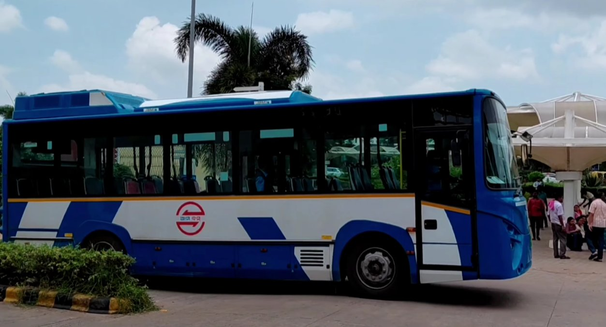
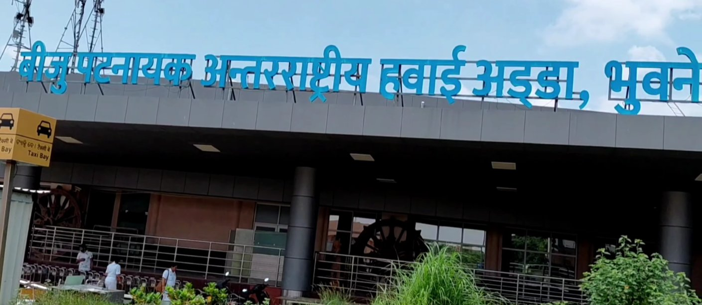

🗺️ Quick Summary — All Options at a Glance
Before diving in, here is every transit option side by side. The rest of this guide breaks each one down in detail with the specific tips you need to use them without getting overcharged.
| Provider | Estimated Cost (2026) | Best For |
|---|---|---|
| Mo Bus (Route 10) | ₹5 (Non-AC) – ₹16 (AC) | Budget solo travelers heading to AG Square or Master Canteen |
| Uber / Ola | ₹160 – ₹220 | Comfort & exact drops near Station Square |
| Prepaid Airport Taxi | ₹200 – ₹250 | Families with heavy luggage or late-night arrivals |
| Auto-Rickshaw (negotiated) | ₹150 target (firm) | Late night after buses stop, solo travelers |
🚌 Taking the Mo Bus — The Local Hack
If you have light luggage, the Mo Bus is the absolute cheapest way to get into the city. You need to look out for Route 10. This route runs directly from the airport towards Biju Patnaik Park and passes right through the central hubs.
The exact walking distance from the Terminal 1 arrival gate to the Mo Bus stop is barely 200 metres. Just exit the terminal, walk straight past the parking lot, and look for the modern bus shelter — the green and white Mo Bus Queue Shelter sign is hard to miss, especially at dusk when it glows.

Route 10 is the only scheduled bus that directly connects the airport to the city core. It's reliable, clean, and runs on a predictable schedule during daylight hours.
- Frequency: Every 20–30 minutes during peak hours (7 AM – 9 PM)
- Ticket: Buy on board with cash, or use the "Mo Bus" app for a 10% Mo Card discount
- Drop-off: Get off at the AG Square stop or continue to Master Canteen
- Luggage note: One large trolley bag is manageable; two or more and Uber makes more sense
A practical walkthrough of airport transit options in Bhubaneswar — covering the Mo Bus route, app cab pickup zones, and how to handle auto negotiations outside the terminal.
📱 Booking an Uber from the Airport
App-based cabs are highly reliable in Bhubaneswar. Once you land, open your Uber or Ola app to check the surge pricing. The standard fare to the railway station usually hovers around ₹160 to ₹220. The travel time is a breezy 10 to 15 minutes, depending on traffic near Rajmahal Square.
- Pickup Zone: There is a designated app-cab pickup zone right outside the arrivals exit — look for the signboard, it is clearly marked
- Traffic Pinch Points: Expect slight delays if you are travelling towards Master Canteen during evening rush hour (around 6 PM to 8 PM near Rajmahal Square)
- Rapido Alternative: If you are travelling solo and are comfortable on a bike, the Rapido app typically quotes ₹80–₹110 for the same ride — roughly half the car fare
- Surge Tip: If surge is active, wait 5–10 minutes inside the terminal with a coffee. Surge on this short route usually drops quickly
🚕 The Prepaid Taxi Experience
Sometimes, you just want to grab a car without dealing with apps or wait times. The BBI Airport has an official prepaid taxi counter right inside the arrival hall, staffed around the clock. You pay upfront, receive a printed slip, and walk directly to your designated car — no negotiation, no surprise charges.
Fares to Bhubaneswar Railway Station are fixed, usually costing around ₹200 to ₹250 depending on vehicle type (hatchback vs. sedan).
- Zero Surge: You will not pay extra even if it is raining or late at night — the rate on the slip is final
- Spacious: Perfect if you are travelling with family or have multiple large suitcases
- Safe: All drivers are registered with the airport police and carry verified ID
- Wait Time: Usually 5–8 minutes from counter payment to car departure

🌙 Late-Night Auto-Rickshaw Negotiation Tips
Arriving past 10 PM changes the game entirely. Mo Buses stop running, and app cabs can have longer wait times. Local auto-rickshaw drivers will flock to you, often quoting ₹300 or more for a mere 4 km ride. Do not accept the first price.
- Walk to the main road: Walk slightly away from the terminal toward Ekamra Square to find autos that are running regular routes — not parked just to catch airport arrivals
- The "Unit-1 Haat" trick: Tell the driver you need to go near Unit-1 Haat or Sriya Square instead of "Railway Station" — mentioning a local landmark sometimes eliminates the tourist tax immediately
- Target Price: Negotiate firmly for ₹150. Anything over ₹200 for this 4 km distance is too much. Walk away if they won't come below ₹180
- Prepaid counter is still open: The airport prepaid taxi counter runs 24 hours — always your safest fallback after midnight
🚩 Red Flags to Avoid
Every transit hub has its quirks, and Bhubaneswar Airport is no different. The scams below are all real and actively reported by residents in early 2026. Keep your guard up.
-
The "Luggage Charge" Scam Refuse any auto driver who tries to add a ₹50 surcharge for putting your trolley bag in the back. There is no official luggage tariff for autos in Bhubaneswar. This is a flat-out invented fee targeted at travellers.
-
Ignoring the Meter (Non-Prepaid Cabs) Never get into a non-prepaid taxi without agreeing on the final fare first and confirming it verbally. Meters are rarely used by regular street cabs. If a driver says "meter se chalega" but then quotes a suspiciously high number on arrival, you have no recourse.
-
Fake Uber / Ola Drivers Do not share your OTP with anyone shouting "Uber!" at the exit gate until you verify their license plate matches your app. Walk to the designated pickup zone and match the plate before getting in. This is the single most important security step.
-
Exaggerated Rain / Night Premiums A ₹15–₹20 increase during heavy rain for an auto is reasonable and accepted practice. A demand for double the fare is not. If it is raining, the Uber app's surge pricing still usually lands below what inflated street autos charge.
Travelling light and during daylight? Mo Bus Route 10 at ₹5–₹16 is unbeatable. Travelling with family or luggage? Skip the negotiation — go straight to the prepaid counter inside the hall. Arriving at a normal hour and want doorstep delivery? Uber or Ola at ₹160–₹220 is the right call. Past midnight? Use the 24-hour prepaid taxi counter and avoid street autos entirely unless you are comfortable negotiating hard.
Fares based on direct field testing at Biju Patnaik International Airport, April 2026. App-cab fares are estimates and vary with surge pricing. Prepaid taxi rates are government-fixed and should be verified at the counter on arrival. Have an updated fare or correction? Contact us here. Last verified: April 8, 2026.

Keep Exploring Bhubaneswar
- Once settled, read our guide on the Hidden Costs of Moving to Bhubaneswar before signing a lease — it covers broker fees and advance deposits nobody warns you about.
- If you are already renting, check out our step-by-step tutorial on Understanding Your TPCODL Electricity Bill so you never overpay for power.